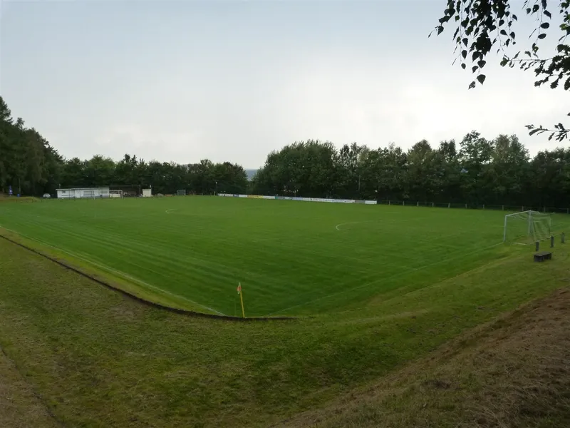
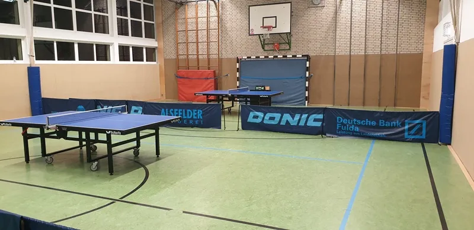

Sportanlage „Am Rippberg“
Die Heimat von Fußball und Tennis. Zur Anlage gehören zwei Rasenplätze und zwei Tennisplätze mit Kunstrasenbelag. Der Fußballplatz verfügt über eine LED-Anzeigetafel.
Eine Gemeinschaft. Sechs Abteilungen. Über 100 Jahre Vereinsgeschichte.
Neuigkeiten, Termine und Einblicke aus den Abteilungen.
Die SG Hattenhof ist mehr als ein Sportverein – sie ist ein Stück Heimat und gelebte Gemeinschaft.
Was 1919 als Fußballklub begann, ist über die Jahrzehnte zu einem Mehrspartenverein mit Angeboten für Kinder, Jugendliche und Erwachsene gewachsen. Ob auf dem Platz, in der Halle oder am Spielfeldrand: Bei uns stehen Bewegung, Teamgeist und das Miteinander im Mittelpunkt.
Unsere Vereinsgeschichte →Finde den Sport, der zu dir passt. Lerne unsere Abteilungen kennen und nimm direkt Kontakt auf.
Hier wird trainiert, gespielt, angefeuert und Gemeinschaft gelebt.

Die Heimat von Fußball und Tennis. Zur Anlage gehören zwei Rasenplätze und zwei Tennisplätze mit Kunstrasenbelag. Der Fußballplatz verfügt über eine LED-Anzeigetafel.

Trainingsort für Tischtennis, Damengymnastik, Kinderturnen und Volleyball. Kerzeller Straße 5, 36119 Neuhof-Hattenhof.
Hinweis Tischtennis: Der Parkplatz an der Kerzeller Straße ist laut Vereinsinformation ab Sommer 2026 voraussichtlich etwa zwei Jahre gesperrt. Zugang über die Rückseite neben dem Pfarrheim, Neuhofer Straße 8.
Einige wichtige Stationen aus mehr als 100 Jahren Vereinsgeschichte.
Du möchtest mitmachen oder erst einmal reinschnuppern? Melde dich bei uns und finde das passende Sportangebot.
Kontakt aufnehmen →Weiherstraße 21
36119 Neuhof-Hattenhof